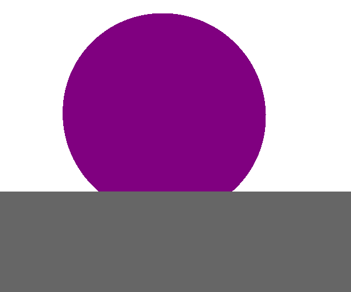
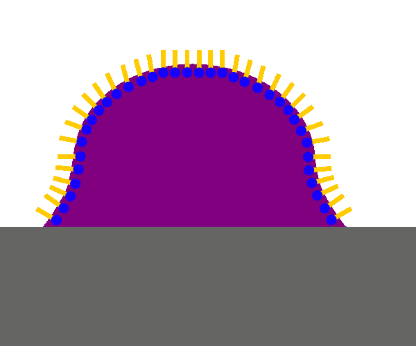
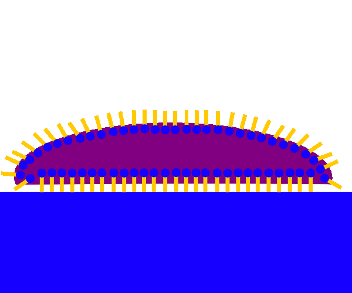

Um die Anzahl der starken Wasserstoffbrückenbindungen
innerhalb der wässrigen Phase zu maximieren
(also aufgrund des starken inneren Zusammenhalts der
Flüssigkeit = Kohäsion), kugelt sich ein
Wassertropfen an einer Faser stark ab.
Die Anhaftungskräfte (Adhäsion) zwischen der
wässrigen Phase und der Faser sind also geringer.

Da die Oberflächenspannung durch die
Tensidmoleküle an der Wasser/Luft-Grenzfläche
herabgesetzt wird, flacht sich der Wassertropfen
etwas ab, die Kontaktfläche mit der Faser erhöht sich.

Da sich die unpolaren Schwanzgruppen der
anionischen Tensidmoleküle entlang der Faser,
die negativen polaren Kopfgruppen aber in Richtung
der wässrigen Phase anordnen, wird der Wassertropfen
gewissermaßen an der Faser entlangezogen.
Er flacht sich noch weiter ab, die Benetzung nimmt weiter zu.